Chief Executive Officer
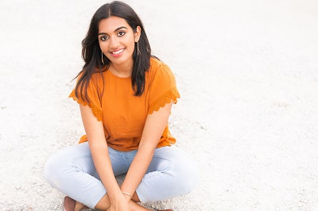Meet Meera, a determined third-year biomedical science major at The Ohio State University, aspiring to become a physician. Alongside her academic pursuits, she spends her free time binge-reading captivating books and helping train service dogs. As Chief Executive Officer, Meera leads the development of our innovative implicit bias training program and oversees outreach efforts for Mindful Diagnosis. Her personal experience with healthcare disparities as a person of color drives her mission to implement effective change. Through this non-profit, she aims to transform the lives of countless patients through enhanced implicit-bias awareness and equitable medical education.
Chief Operating Officer
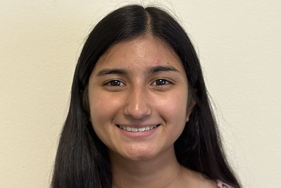Introducing Mohini, a third year public health major from The Ohio State University. Mohini enjoys spending time listening to music and being outside playing frisbee and running. As the Chief Operating Officer, Mohini handles all nonprofit filings and paperwork for Mindful Diagnosis. Mohini hopes that Mindful Diagnosis will be able to make a major impact on the healthcare field by providing engaging information about implicit bias and medical diversity education.
Chief Technology Officer
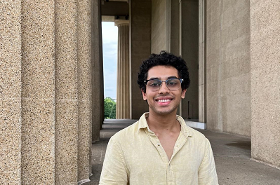Meet Vraj, a junior at The Ohio State University, majoring in Computer Science & Engineering. Beyond academia, Vraj enjoys cooking and playing the piano. Vraj leads our programming team, skillfully deploying cutting-edge systems for Mindful Diagnosis. Vraj's vision for the future of the company is to witness Mindful Diagnosis become the foremost tool adopted by medical institutions to combat implicit bias.
Director Of Outreach
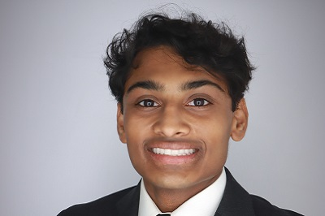Introducing Rohan, a fourth year at the University of Cincinnati specializing in Medical Sciences. Beyond their professional pursuits, Rohan enjoys cooking, playing sports and listening to music. As Director of Outreach, Rohan takes charge of reaching out to leaders in implicit bias research and seeking out opportunities to collaborate with health systems and medical schools. Rohan hopes that Mindful Diagnosis addresses the impact of implicit bias throughout the healthcare system to ultimately improve patient outcomes and experiences.
Senior Programmer
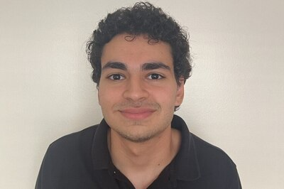Introducing Ayyoub, a Junior at Ohio State, specializing in Computer Science. Ayyoub finds joy in reading and spending time with others in his free time. As a senior programmer, Ayyoub takes charge of bringing and implementing new technology to MD. His vision for the future is to witness Mindful Diagnosis properly mitigate implicit bias by correcting it early in a medical professional`s career.
Junior Programmer
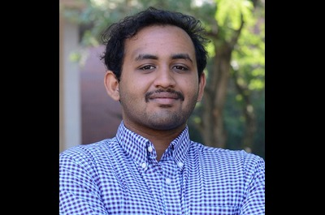Introducing Nafees Sathik, a Senior at The Ohio State University, specializing in Neuroscience, minoring in Computer Information Sciences. Beyond his professional pursuits, Nafees finds joy in cars and loves to learn from the car community. In his role at Mindful Diagnosis, Nafees will be assisting with Vraj and Ayyoub programming the database, website and apps as a junior programmer. His vision for the future is to witness Mindful Diagnosis, leading the way in patient care, making a significant impact on ensuring proper diagnosis, leading to limited drug usage and a greater turn to a holistic view of medicine to include diet, exercise and sleep.
Design Developer
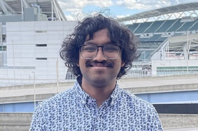Introducing Ashish, a fourth year at the University of Cincinnati specializing in microbiology. Beyond their professional pursuits, Ashish enjoys reading, exercising, and gaming. As the Design Developer, Ashish aids in updating and designing new Mindful Diagnosis technology and researching the many different topics involved in our Learning Modules. Ashish`s vision for Mindful Diagnosis is to help propel old and biased healthcare systems into new and stratified systems that benefit everyone.
Networking Coordinator
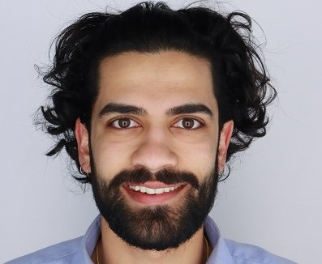Introducing Archit Deshpande a 4th year premedical undergraduate student at the University of Cincinnati, specializing in Neuroscience with minors in chemistry and public health. He hopes to become a physician in the Emergency Medicine field. Beyond professional pursuits Archit finds joy in watching sports as well as volunteering in the community. In his role at Mindful Diagnosis Archit hopes to outreach to different schools to bring Mindful Diagnosis to a wider audience helping to reduce implicit bias throughout healthcare.
Fundraising Coordinator
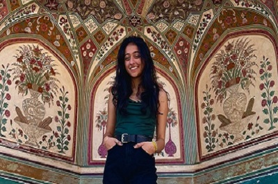Introducing Ishani, a third year at the University of Cincinnati, specializing in Business Analytics and Information Systems. Beyond their professional pursuits, Ishani finds joy in painting, crochet, and building legos. As the Fundraising Coordinator, Ishani takes charge of handling the restaurants and GoFundMe fundraisings of Mindful Diagnosis. Their vision for the future is to see Mindful Diagnosis out in the world and bringing awareness to the impact of implicit bias.
Outreach Officer

Introducing Nikhitha, a fourth year at a the Ohio State University studying neuroscience with a specialization in behavioral sciences. Apart from school and work, Nikhitha enjoys cooking, shopping, and spending time with loved ones. As the Outreach Officer, Nikhitha implements strategies to promote Mindful Diagnosis in the healthcare industry. Nikhitha hopes to see Mindful Diagnosis in action and help combats implicit bias.
Social Media Manager

Introducing Shrea, a fourth year at The Ohio State University specializing in health sciences . Beyond their professional pursuits, Shrea finds joy in lifting, cooking, and shopping. As Social Media Manager, Shrea designs and plans posts for Mindful Diagnosis social media platforms. Shrea hopes to see Mindful Diagnosis raise awareness of implicit bias on a macro level in the healthcare field.
Media Curator
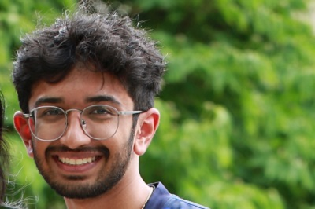Introducing Sneham, a third year at the University of Cincinnati, specializing in Biomedical Studies. Beyond their professional pursuits, Sneham finds joy in playing golf, watching baseball and taking pictures. As the media curator, Sneham produces media for the public to see from Mindful Diagnosis. Their vision for the future is to witness change in the field of public health in relation to minorities leading the way in medicine, making a significant impact on public health as well as diversity inclusion.
Grants Coordinator
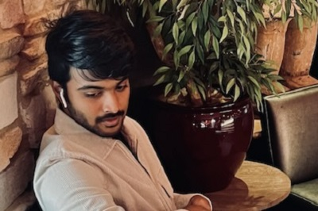Introducing Rishi, a Junior at The Ohio state University , specializing in Finance. Beyond their professional pursuits, Rishi finds joy in exploring new places and restaurants. As the grants coordinator for grants and funding, Rishi takes charge of finding new ways of getting funds as well as managing them. Rishi hopes that mindful diagnosis could teach the modern health care about the importance of implicit bias, and hopes to see them apply it.